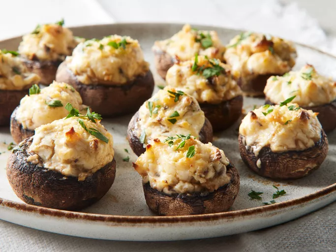

Stuffed Mushrooms

Description
These delicious stuffed mushrooms are pretty easy to make and taste just like the ones you'd get in a restaurant!
Looking for a bite-sized appetizer that everyone will love? Try this irresistible stuffed mushroom recipe with a savory cream cheese filling!
Ingredients
- 12 whole fresh mushrooms
- Vegetable oil
- Cream cheese
- Parmesan cheese
- Fresh garlic
- Black pepper
- Onion Powder
- Cayenne
Steps
- Clean the mushrooms, then remove and chop the stems.
- Cook the garlic and mushroom stems in oil. Set aside to cool.
-
Stir in the remaining ingredients to make the filling.
- Fill each mushroom cap with the filling.
- Bake the stuffed mushrooms in the preheated oven.
Home